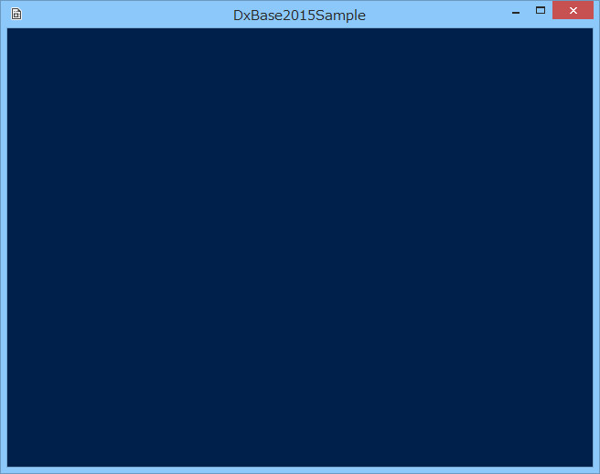
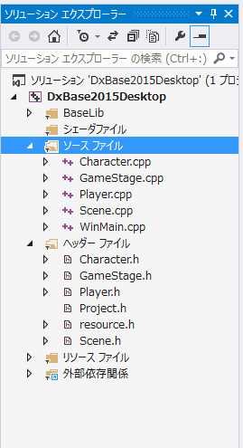
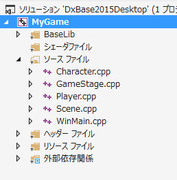

００１．空のプロジェクト
ソリューションを開いて、ビルド、実行する
001空のプロジェクトディレクトリには、ゲームのベースになる「何もしない」プロジェクトがあります。
001空のプロジェクトディレクトリ内の
DxBase2015Desktop.slnを
VisualStdio2013で読み込んでください。動作環境にあっていれば、実行できます。
ソリューションを開きましたら、
ビルド：ソリューションのリビルドを実行してください。
ビルドが終了しましたら、
デバッグ：デバッグなしで開始を実行してください。以下のような画面が現れます。もし起動できないなどの場合は、もう一度お使いの環境が動作環境にあってるかご確認ください。

図0000a
空のプロジェクトの内容
プロジェクトの
ソリューションエクスプローラーを見ると以下のようになってます。

図0000b
まず、
DirectXTXプロジェクトはテクスチャ読み込みに利用している、Microsoft社の
DirectXTXです。ソースファイルで提供されているので、ソリューションに含めています。リビルドのときに、
libファイルを作成しています。
ソースファイルというフィルターには、ゲームコンテンツのソースファイル、
ヘッダーファイルというフィルターには、ゲームコンテンツのヘッダファイルが入っています。
シェーダファイルはゲームコンテンツで作成する独自のシェーダーを入れます。今は独自のシェーダーはないので空になってます。
BaseLibというフィルタには
フレームワーク本体が入ってます。フレームワークはチュートリアルやサンプルで共通で使用するので、それらのソリューションディレクトリの外に置かれています。
新しく、自分のゲームを作成する場合は、この
001空のプロジェクトディレクトリと
Libsディレクトリをディレクトリごと別の階層に（マイドキュメント配下など）にコピーし、
「001空のプロジェクト」ディレクトリ名を別のディレクトリ名（例、マイゲーム、など）に変更しソリューションを開きます。
BaseLibフィルタの配下のファイルは、
Headers、Sources、Shadersという3つのサブフィルターがあり、それぞれ
フレームワークのヘッダ、ソース、シェーダーが置かれています。
フレームワークのコメントは
Doxygen形式で記述されていますので、簡単にhtml化できます。
001空のプロジェクトは何もしませんが、ゲームを作成する準備はすべて整ってます。
次項から、オブジェクトの配置などの説明をしますが、今項では、それらのソースファイルやクラスの役割を簡単に述べます。
GameStage.h、GameStage.cpp
DxBase2015では、
シーン、ステージ、ゲームオブジェクトという3つの階層で、ゲームを管理します。
シーンは
ゲーム全体です。1つのゲームは1つのシーンを持ちます。
ステージはオブジェクトが配置されるステージです。
ゲーム画面ばかりではなく、
タイトル、リザルト画面、ステージセレクト画面など、ゲームには複数のステージがありますが、これらは別のステージとして作成します。それらを統括してまとめるのが
シーンという関係になります。
GameStage.h、GameStage.cppはこの中で、
ゲーム画面を定義するファイルです。タイトルやリザルト画面はこのサンプルではありませんが、
ゲーム画面同様の方法で作成することができます。
GameStage.hは以下のようになってます。
#pragma once
#include "stdafx.h"
namespace basedx11{
//--------------------------------------------------------------------------------------
// class GameStage : public Stage;
// 用途: ゲームステージクラス
//--------------------------------------------------------------------------------------
class GameStage : public Stage{
//ビューの作成
void CreateViews();
public:
//構築と破棄
GameStage() :Stage(){}
virtual ~GameStage(){}
//初期化
virtual void Create()override;
};
}
//endof basedx11
ここには、
GameStageクラスが宣言されています。
コンストラクタ、デストラクタは内容は空です。コンストラクタは、親ステージのコンストラクタを、メンバイニシャライザから呼び出しています。
CreateViews()関数とCreate()仮想関数は宣言だけ行い、実体は
GameStage.cppに記述します。
GameStage.cppは以下のようになってます。
#include "stdafx.h"
#include "Project.h"
namespace basedx11{
//--------------------------------------------------------------------------------------
// class GameStage : public Stage;
// 用途: ゲームステージクラス
//--------------------------------------------------------------------------------------
//ビュー類の作成
void GameStage::CreateViews(){
//最初にデフォルトのレンダリングターゲット類を作成する
CreateDefaultRenderTargets();
//マルチビューコンポーネントの取得
auto PtrMultiView = GetComponent<MultiView>();
//マルチビューにビューの追加
auto PtrView = PtrMultiView->AddView();
//ビューの矩形を設定（ゲームサイズ全体）
Rect2D<float> rect(0, 0,
(float)App::GetApp()->GetGameWidth(), (float)App::GetApp()->GetGameHeight());
//最初のビューにパラメータの設定
PtrView->ResetParamaters<Camera, MultiLight>(
rect, Color4(0.0f, 0.125f, 0.3f, 1.0f), 1, 0.0f, 1.0f);
}
//初期化
void GameStage::Create(){
try{
//ビュー類を作成する
CreateViews();
}
catch (...){
throw;
}
}
}
//endof basedx11
void GameStage::CreateViews()関数では、最初に、
CreateDefaultRenderTargets()という関数を呼び出して、DitrectX11の
ID3D11RenderTargetViewなどのインターフェイス類を初期化します。このインターフェイスセットは、RenderTargetViewのほかに、深度バッファ、影（シャドウマップ）などを持ちます。
続いて
ビューを作成します。
ビューというのは、
１つのカメラで見る窓のようなものです。ステージには、ゲームステージに限らず複数の
ビューを登録することができます。複数のビューは、たとえばミニマップや画面分割をする際に使用します。このサンプルではビューは1つだけです。
まず、ビューの親となる
マルチビューコンポーネントを取得し、ビューを１つ追加します。
追加したらそのビューにパラメータを設定します。
//最初のビューにパラメータの設定
PtrView->ResetParamaters<Camera, MultiLight>(
rect, Color4(0.0f, 0.125f, 0.3f, 1.0f), 1, 0.0f, 1.0f);
ここでは、ビューの矩形は画面全体、背景色は濃い青、ライトは１つで、ビューの深度を0.0から1.0の間にします。
ビューの深度は、ビューが重なったときに意味を持ちます。深度は0.0から1.0が最大値です。たとえば、0.0から0.49までのビューAと、0.5から1.0までのビューBがあった場合、ビューAは必ずビューBの上に表示されます。
void GameStage::Create()関数は、ゲームステージのインスタンスが構築されたときに、自動的に呼び出される仮想関数です。ここでは、
CreateViews()関数を呼び出しています。
そのほかのソースコード
空のプロジェクトで、具体的に記述するのは以上です。ほかのソースはデフォルトの状態です。
シーンクラスである
Scene.hとScene.cppは、最初に
GameStageクラスのインスタンスをアクティブにします。
WinMain.cppはこのアプリケーションのエントリポイントなどが記述されます。Windowsとやり取りをする場合は、ここにソースを追加記述しますが、このサンプルではデフォルトのままです。
Player.hとPlayer.cppは主に、プレイヤー（入力装置で動作するキャラクタ）を記述するために準備されてたファイルです。ここでは何も記述がありません。
Character.hとCharacter.cppは敵キャラなどを記述します。ここでは記述がありません。
Project.hには、ゲーム側で利用するヘッダをまとめておきます。ゲームが大きくなると、ファイル数はこれだけではとても足りません。新たに作成したヘッダは、
Project.hにまとめておくと便利です。
空のプロジェクトは、新規でゲームを作成するときにひな形として利用します。
ディレクトリ名（空のプロジェクト）を変更して別にコピーし、
Libsディレクトリも同じ階層にコピーしてソリューションを呼び出すと、新規でゲームの作成を始められます。
DxBase2015で作成する実行ファイルは、デフォルトで
DxBase2015Desktop.exeです。サンプルもすべて同じです。ウインドウタイトルは、デフォルトで
DxBase2015Sampleです。
ゲームの実行ファイル名を変更する場合は、以下のようにソリューションエクスプローラーのプロジェクト名をゲーム名（実行ファイル名）に変更します。以下の例ですと
MyGame.exeが生成されます。

図0000c
また、ウインドウのタイトルを変更する場合は、
WinMain.cppの上部にある、
const wchar_t* pWndTitleを、変更します。
const wchar_t* pWndTitleはDxBase2015には数少ないグローバル変数です。
const wchar_t* pWndTitle = L"MyGame";
こんな感じです。これで、ウインドウタイトルが
MyGameになります。
図0000d
新しいゲームを作成する場合は、このように、実行ファイル名とウインドウタイトルの変更を最初に行うとよいでしょう。